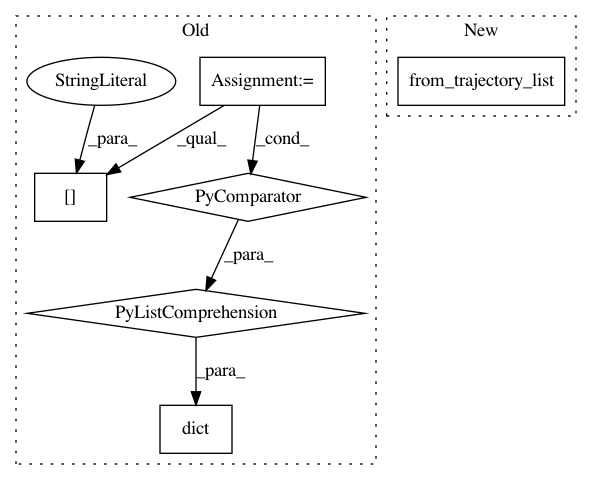

ce5ffebe294eeeb088abfdc53d73b1c98c2565f2,src/garage/np/algos/batch_polopt.py,BatchPolopt,process_samples,#BatchPolopt#Any#Any#,80
Before Change
tensor_utils.pad_tensor_dict(p, max_path_length) for p in env_infos
])
terminals = [path["dones"] for path in paths]
valids = [np.ones_like(path["returns"]) for path in paths]
valids = tensor_utils.pad_tensor_n(valids, max_path_length)
lengths = np.asarray([v.sum() for v in valids])
ent = np.sum(self.policy.distribution.entropy(agent_infos) *
valids) / np.sum(valids)
undiscounted_returns = self.evaluate_performance(
itr,
dict(env_spec=None,
observations=obs,
actions=actions,
rewards=rewards,
terminals=terminals,
env_infos=env_infos,
agent_infos=agent_infos,
lengths=lengths,
discount=self.discount))
self.episode_reward_mean.extend(undiscounted_returns)
After Change
undiscounted_returns = log_performance(
itr,
TrajectoryBatch.from_trajectory_list(self.env_spec, paths),
discount=self.discount)
self.episode_reward_mean.extend(undiscounted_returns)
In pattern: SUPERPATTERN
Frequency: 3
Non-data size: 6
Instances
Project Name: rlworkgroup/garage
Commit Name: ce5ffebe294eeeb088abfdc53d73b1c98c2565f2
Time: 2020-01-22
Author: 41180126+krzentner@users.noreply.github.com
File Name: src/garage/np/algos/batch_polopt.py
Class Name: BatchPolopt
Method Name: process_samples
Project Name: rlworkgroup/garage
Commit Name: ce5ffebe294eeeb088abfdc53d73b1c98c2565f2
Time: 2020-01-22
Author: 41180126+krzentner@users.noreply.github.com
File Name: src/garage/torch/algos/vpg.py
Class Name: VPG
Method Name: train_once
Project Name: rlworkgroup/garage
Commit Name: ce5ffebe294eeeb088abfdc53d73b1c98c2565f2
Time: 2020-01-22
Author: 41180126+krzentner@users.noreply.github.com
File Name: src/garage/tf/algos/batch_polopt.py
Class Name: BatchPolopt
Method Name: process_samples